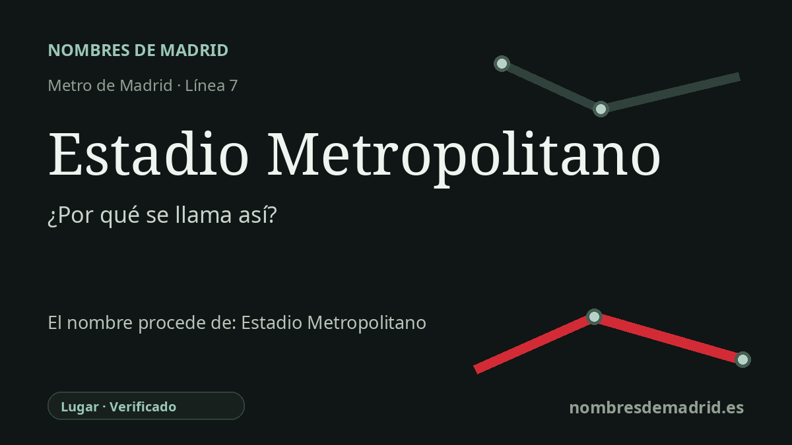

Publicado el · Investigación de Nombres de Madrid · Cómo verificamos cada origen · 8 fuentes consultadas
Respuesta rápida
La estación toma su nombre del cercano estadio Metropolitano del Atlético de Madrid. Metro de Madrid cambió en junio de 2017 el antiguo nombre Estadio Olímpico, poco antes del traslado del club desde el Vicente Calderón.
La historia del nombre
El origen directo del nombre de la estación es el estadio del Atlético de Madrid situado junto a ella. La parada de la línea 7 de Metro de Madrid se llamó originalmente **Estadio Olímpico**, pero en la noche del 25 al 26 de junio de 2017 empezó el cambio de rótulos a **Estadio Metropolitano**, antes del traslado del Atlético a su nuevo campo.
La palabra “Metropolitano” es anterior al estadio de 2017. El Atlético la eligió como referencia histórica al antiguo **Stadium Metropolitano**, casa del club desde 1923 hasta 1966, antes de la mudanza al Vicente Calderón. Aquel campo estuvo en el entorno de la actual plaza de la Ciudad de Viena, cerca de la avenida de la Reina Victoria y de Cuatro Caminos.
El nombre antiguo estaba ligado al primer Madrid del metro y a sus desarrollos urbanos. La propia crónica centenaria del Atlético señala que el Stadium Metropolitano fue promovido por los hermanos Otamendi, creadores del Metro de Madrid, y que la Sociedad Stadium Metropolitano se constituyó el 16 de marzo de 1922 antes de la inauguración del campo el 13 de mayo de 1923. Por eso el nombre conserva a la vez memoria futbolística y la huella de los proyectos ferroviarios y urbanísticos metropolitanos del noroeste de Madrid.
El estadio actual también tiene una historia superpuesta. El recinto nació como estadio de atletismo conocido popularmente como **La Peineta**, vinculado a las aspiraciones olímpicas de Madrid, y el antiguo nombre de la estación reflejaba esa etapa. El estadio remodelado del Atlético se estrenó para el primer equipo el 16 de septiembre de 2017, acogió la final de la Liga de Campeones de 2019 y hoy se denomina comercialmente **Riyadh Air Metropolitano**, tras las etapas Wanda y Cívitas.
La etimología, por tanto, es sólida, pero conviene formularla con precisión. La estación no lleva el nombre de una persona ni del patrocinador; se llama así por el cercano estadio Metropolitano, cuyo nombre recupera deliberadamente el campo rojiblanco de 1923-1966. El nombre anterior de la estación fue Estadio Olímpico, y la fecha más adecuada para el cambio efectivo es el 26 de junio de 2017, con presentación pública oficial de la Comunidad de Madrid el 27 de junio de 2017.